Geometric Latent Diffusion: Repurposing Geometric Foundation Models for Multi-view Diffusion

We propose Geometric Latent Diffusion (GLD), a framework that repurposes the feature space of geometric foundation models (e.g., Depth Anything 3) as the latent space for multi-view diffusion. GLD achieves state-of-the-art novel view synthesis with 4.4× faster training convergence than VAE-based approaches — all trained from scratch without any text-to-image pretraining.
Geometric Feature Space as Diffusion Latent
Geometry as latent space. The first framework to repurpose a geometric foundation model's feature space as the diffusion latent space — DA3 features encode both high-fidelity RGB (35.41 dB PSNR) and strong cross-view correspondences (, surpassing DINOv2's ).
State-of-the-art NVS from scratch. Outperforms all baselines on in-domain benchmarks (Re10K, DL3DV) in both 2D and 3D metrics, and remains competitive out-of-domain — without any text-to-image pretraining.
Zero-shot geometry for free. Depth maps and 3D point clouds are decoded directly from synthesized latents via the frozen DA3 decoder, with no additional training required.
A Three-Stage Pipeline
Stage 1 — Can DA3 features reconstruct images?
We first validate that the frozen DA3 encoder's feature space is expressive enough for high-fidelity image generation.
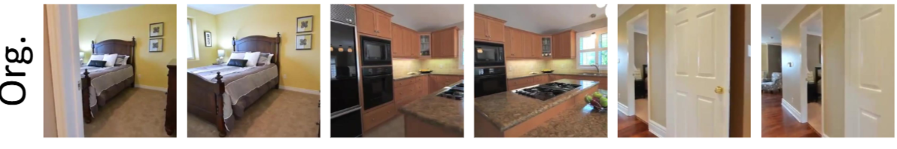
RGB decoder training. A ViT-based decoder is trained to reconstruct RGB images from DA3's multi-level features ( levels), extracted by the frozen encoder.
Level-wise dropout. Individual feature levels are randomly masked during training, forcing the decoder to reconstruct from partial inputs and improving robustness.
Result: 35.41 dB PSNR on Re10K (4,000 test samples) — competitive with the Stable Diffusion VAE (34.53 dB) and SDXL VAE (34.97 dB), confirming the feature space is suitable for diffusion.
Stage 2 — Optimal boundary layer selection
Diffusing all four feature levels is computationally prohibitive, so we identify an optimal boundary layer k: features up to level k are explicitly synthesized by the diffusion model, while deeper features are deterministically derived by propagating through the frozen DA3 encoder.
All models adopt the DiT architecture with flow-matching training, 3D self-attention with RoPE for cross-view reasoning, and Plücker ray conditioning to ensure geometric consistency.
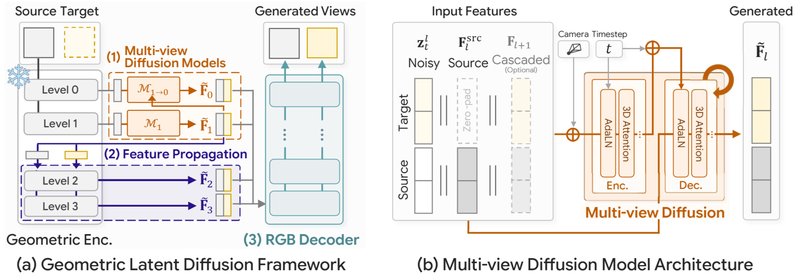
Stage 3 — Cascaded feature generation
With the boundary set at , two multi-view diffusion models generate the explicit feature levels in a cascaded manner.
synthesizes level-1 features. then generates level-0 features conditioned on the synthesized level-1 output, ensuring cross-level alignment.
Feature propagation. Deeper features (levels 2–3) are deterministically derived by passing synthesized level-1 features through the frozen DA3 encoder — no additional diffusion needed.
RGB & geometry decoding. The full multi-level feature set is decoded into target views via , and into depth maps and camera poses via the frozen DA3 geometric decoder — zero-shot, without any fine-tuning.
Quantitative Results
| Method | Scratch | PSNR ↑ | SSIM ↑ | LPIPS ↓ | ATE ↓ | RPEr ↓ | RPEt ↓ | Reproj ↓ | MEt3R ↓ |
|---|---|---|---|---|---|---|---|---|---|
MVGenMaster | ✗ | 14.56 | 0.442 | 0.460 | 0.281 | 6.93 | 0.592 | 0.637 | 0.375 |
Matrix3D | ✗ | 13.33 | 0.396 | 0.451 | 0.459 | 9.65 | 0.850 | 0.667 | 0.394 |
CAMEO | ✗ | 12.32 | 0.371 | 0.567 | 1.143 | 24.76 | 2.149 | 0.706 | 0.404 |
NVComposer | ✗ | 10.51 | 0.273 | 0.646 | 1.810 | 55.59 | 3.098 | 0.852 | 0.517 |
CAT3D† | ✗ | 11.82 | 0.335 | 0.594 | 1.346 | 31.73 | 2.473 | 0.746 | 0.435 |
DINO | ✓ | 14.34 | 0.411 | 0.471 | 0.546 | 13.12 | 1.050 | 0.708 | 0.410 |
VAE | ✓ | 14.72 | 0.446 | 0.476 | 0.589 | 15.00 | 1.116 | 0.674 | 0.407 |
GLD (VGGT) | ✓ | 15.25 | 0.434 | 0.436 | 0.188 | 5.23 | 0.426 | 0.634 | 0.386 |
GLD (DA3) | ✓ | 15.49 | 0.468 | 0.438 | 0.209 | 5.75 | 0.466 | 0.612 | 0.378 |
| Method | Scratch | PSNR ↑ | SSIM ↑ | LPIPS ↓ | ATE ↓ | RPEr ↓ | RPEt ↓ | Reproj ↓ | MEt3R ↓ |
|---|---|---|---|---|---|---|---|---|---|
MVGenMaster | ✗ | 15.22 | 0.588 | 0.456 | 0.282 | 6.42 | 0.526 | 0.664 | 0.339 |
Matrix3D | ✗ | 14.49 | 0.580 | 0.448 | 0.413 | 8.93 | 0.638 | 0.666 | 0.344 |
CAMEO | ✗ | 13.80 | 0.561 | 0.522 | 0.446 | 12.93 | 0.790 | 0.661 | 0.344 |
NVComposer | ✗ | 11.14 | 0.418 | 0.649 | 0.829 | 42.85 | 1.435 | 0.860 | 0.457 |
CAT3D† | ✗ | 13.35 | 0.527 | 0.561 | 0.496 | 17.49 | 0.941 | 0.719 | 0.361 |
DINO | ✓ | 15.63 | 0.601 | 0.448 | 0.345 | 15.59 | 0.719 | 0.721 | 0.319 |
VAE | ✓ | 15.65 | 0.606 | 0.456 | 0.278 | 8.68 | 0.552 | 0.681 | 0.375 |
GLD (DA3) | ✓ | 16.36 | 0.630 | 0.431 | 0.211 | 7.07 | 0.444 | 0.673 | 0.328 |
GLD (VGGT) | ✓ | 16.17 | 0.596 | 0.429 | 0.216 | 7.17 | 0.440 | 0.666 | 0.325 |
| Method | Scratch | PSNR ↑ | SSIM ↑ | LPIPS ↓ | ATE ↓ | RPEr ↓ | RPEt ↓ | Reproj ↓ | MEt3R ↓ |
|---|---|---|---|---|---|---|---|---|---|
MVGenMaster | ✗ | 14.17 | 0.304 | 0.511 | 0.320 | 10.92 | 0.587 | 0.676 | 0.402 |
Matrix3D | ✗ | 13.97 | 0.284 | 0.483 | 0.548 | 13.63 | 0.948 | 0.646 | 0.422 |
CAMEO | ✗ | 11.90 | 0.250 | 0.629 | 1.623 | 48.75 | 3.008 | 0.684 | 0.395 |
NVComposer | ✗ | 12.52 | 0.217 | 0.637 | 1.622 | 54.26 | 2.703 | 0.767 | 0.526 |
CAT3D† | ✗ | 11.31 | 0.214 | 0.653 | 1.722 | 54.65 | 3.171 | 0.724 | 0.453 |
DINO | ✓ | 13.71 | 0.267 | 0.542 | 0.949 | 27.57 | 1.720 | 0.707 | 0.444 |
VAE | ✓ | 13.94 | 0.274 | 0.548 | 1.221 | 35.34 | 2.200 | 0.674 | 0.449 |
GLD (DA3) | ✓ | 14.54 | 0.288 | 0.504 | 0.589 | 15.97 | 1.071 | 0.630 | 0.406 |
GLD (VGGT) | ✓ | 13.57 | 0.265 | 0.529 | 0.596 | 16.58 | 1.190 | 0.654 | 0.394 |
Qualitative Results
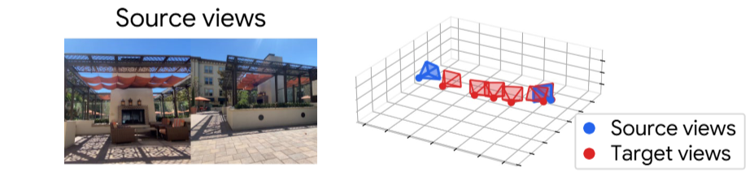
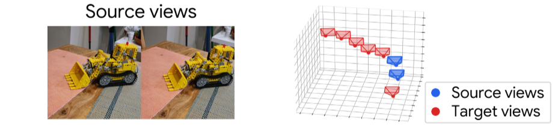
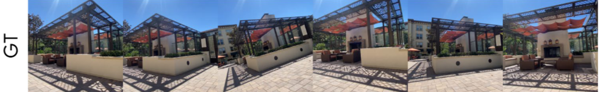
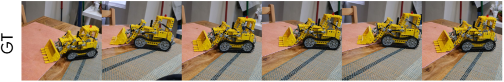
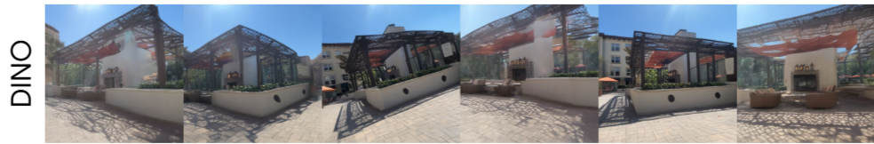
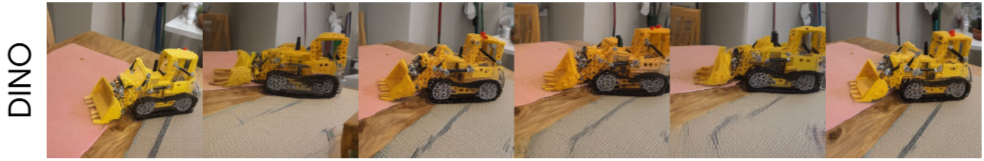
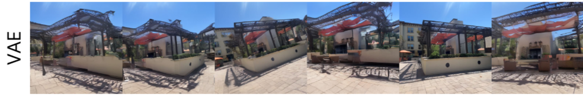
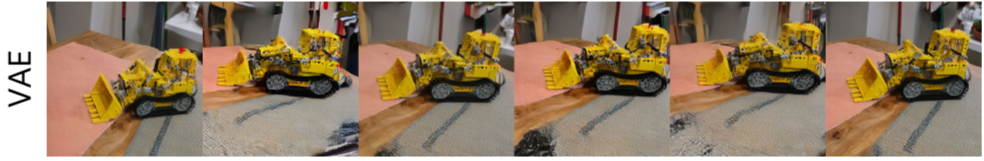
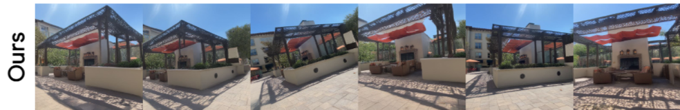
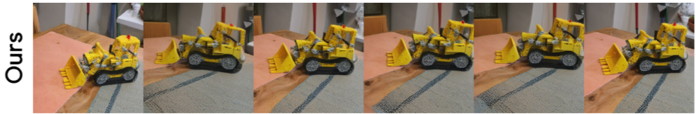
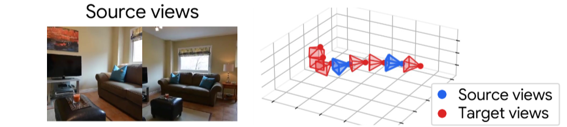
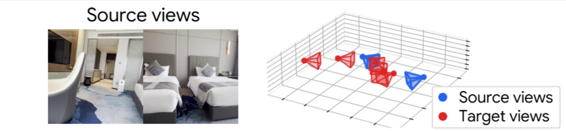
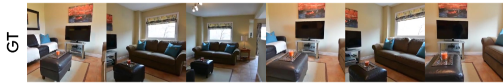
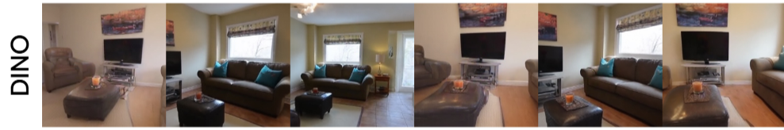
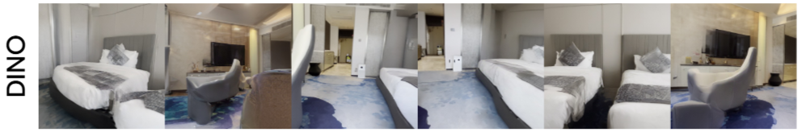
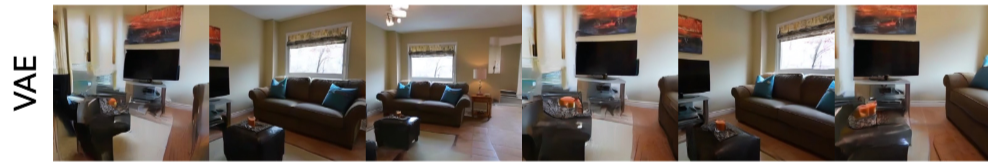
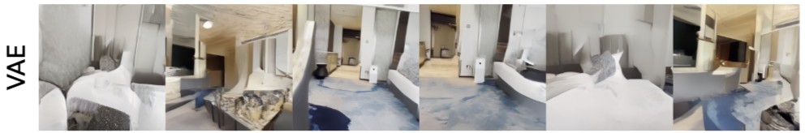
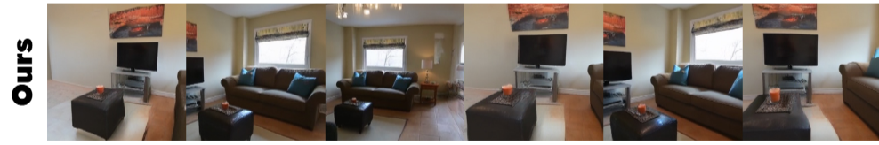
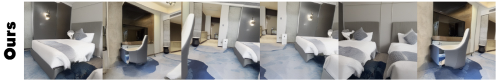
3D Reconstruction
Depth maps and 3D point clouds are decoded directly from synthesized latents via the frozen DA3 geometric decoder without any additional training or fine-tuning.
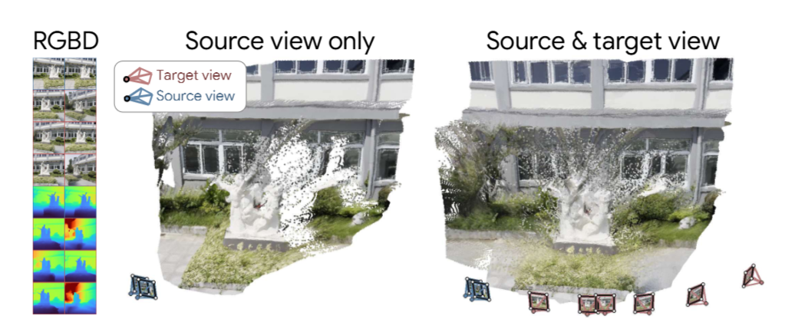
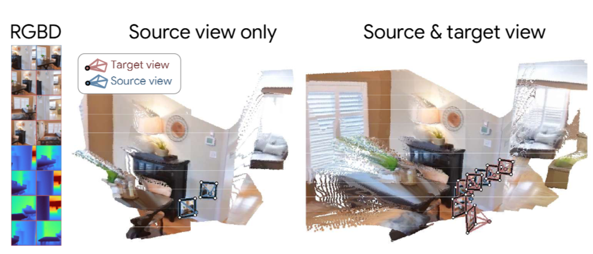
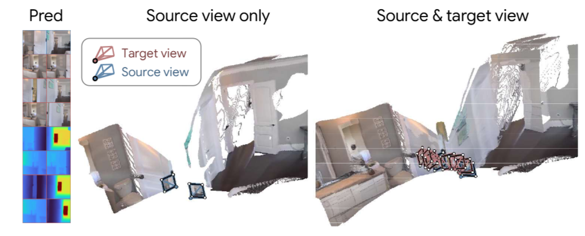
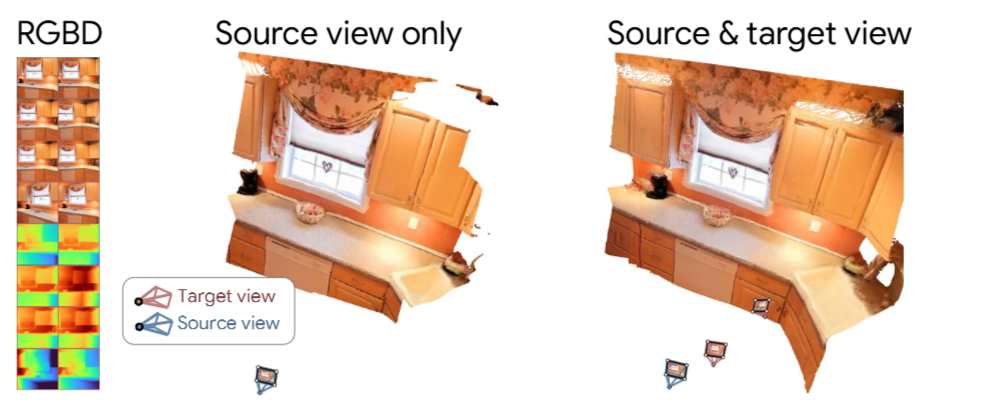
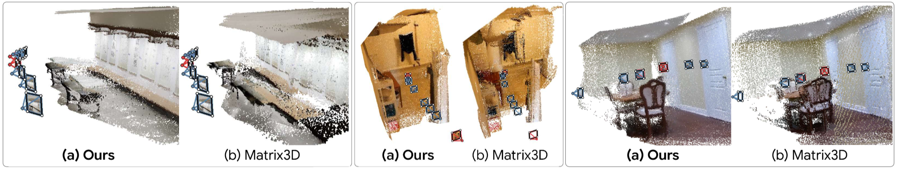
The latent space of diffusion models fundamentally determines their learning efficiency and generation quality. While recent advances in the latent space have driven substantial progress in single-image generation, the optimal latent space for novel view synthesis (NVS) remains largely unexplored. In particular, NVS requires geometrically consistent generation across viewpoints, but existing approaches typically operate in a view-independent latent space. In this paper, we propose Geometric Latent Diffusion (GLD), a framework that repurposes the feature space of a geometric foundation model as the latent space for multi-view diffusion. We show that the features of the geometric foundation model not only support high-fidelity RGB reconstruction but also encode strong cross-view geometric correspondences, providing a well-suited latent space for NVS. Through experiments, GLD outperforms both VAE and RAE on 2D image quality and 3D consistency metrics, accelerating training by more than compared to the VAE latent space. Notably, {GLD} remains competitive with state-of-the-art methods that leverage large-scale text-to-image pretraining, despite training its diffusion model from scratch without such generative pretraining.
@article{jang2026repurposing,
title={Repurposing Geometric Foundation Models for Multi-view Diffusion},
author={Wooseok Jang and Seonghu Jeon and Jisang Han and Jinhyeok Choi and Minkyung Kwon and Seungryong Kim and Saining Xie and Sainan Liu},
journal={arXiv preprint arXiv},
year={2026}
}